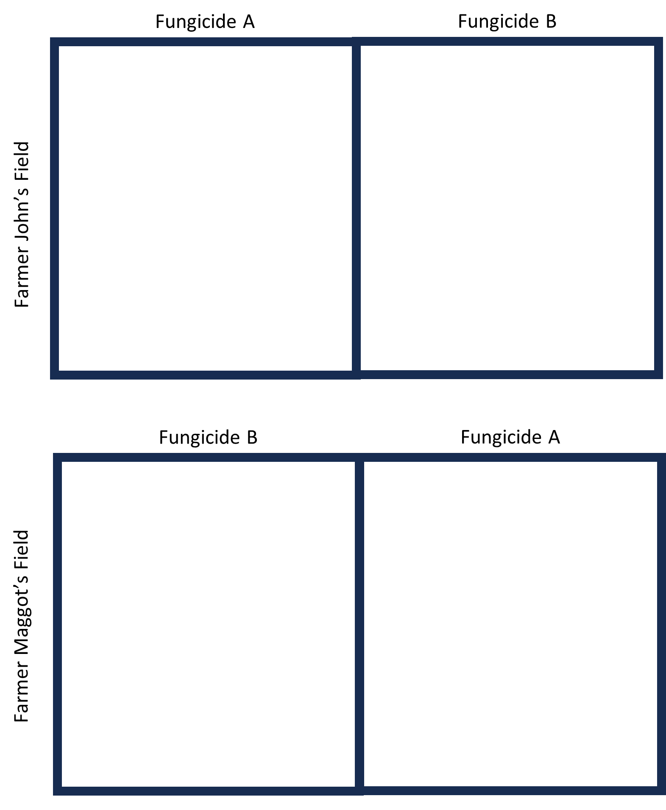
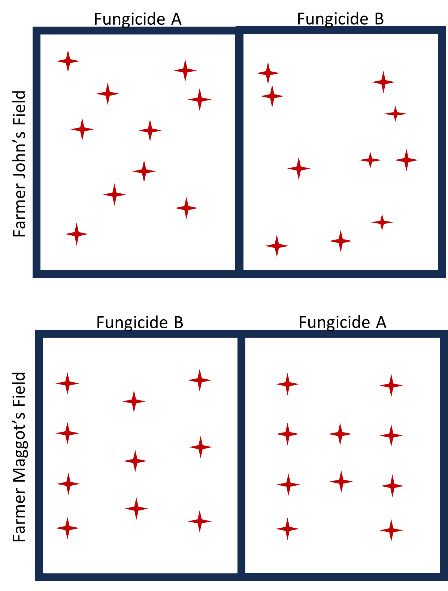
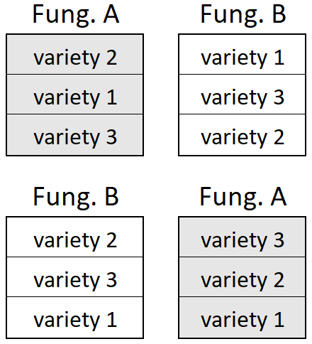

Nested Factorial Designs
Nested Factor Structure
Review the discussion on nested subsample. It will be critical to recognizing the challenge of appropriately analyzing a Nested Design.
In this section you will learn how to identify levels of experimental units within a nested factorial design and how to appropriately analyze them. To identify and analyze a nested design appropriately, you will need to have a solid understanding of:
- Experimental units
- True replication
- Independence of observations
- Degrees of Freedom for Error
Identifying and Diagramming Nested Factors
Experimental Units
To begin, consider an example from agriculture Farmer John would like to compare yield for a specific variety of maize treated with 2 different fungicides: generic vs premium. Farmer John learned about the importance of independent applications of the experimental levels and gets his neighbor, Farmer Maggot, to participate. Their design is a basic single factor design:

Farmer John is could still take subsamples within a each experimental unit:

Where the data would look like:
| Farmer | Subsample | Fungicide | Yield |
|---|---|---|---|
| John | 1 | A | 501.36 |
| John | 2 | A | 507.27 |
| John | 3 | A | 482.3 |
| John | 4 | A | 522.1 |
| … | … | … | 498.3 |
| John | 1 | B | 487.45 |
| John | 2 | B | 497.86 |
| John | 3 | B | 501.22 |
| John | 4 | B | 499.8 |
| … | … | … | … |
| Maggot | 1 | A | 506.45 |
| Maggot | 2 | A | 536.12 |
| Maggot | 3 | A | 514.25 |
| Maggot | 4 | A | 515.97 |
| … | … | … | … |
| Maggot | 1 | B | 524.31 |
| Maggot | 2 | B | 519.22 |
| Maggot | 3 | B | 503.7 |
| Maggot | 4 | B | 498.67 |
| … | … | … | … |
Because the treatments are replicated, we can analyze this model as we did in Nested Subsamples:
\[ y_\text{ijk} = \mu + \alpha_i + S_\text{j(i)} + \epsilon_\text{ijk} \tag{1}\]
Including the sub-sample term in the model preserves the appropriate degrees of freedom for error. In this example, we have N = 4 experimental units and k = 2 levels of the experiment, leaving us with N-k = 2 degrees of freedom for testing Fungicide efficacy.
Adding a Nested Factor
Suppose Farmer John suspects that there might be an interaction with the fungicide and different varieties of maize. We could add 3 different maize varieties to the experiment, but because of mechanical constraints we cannot completely randomize Fungicide by Variety combinations. We’re still stuck spraying half the field with Fungicide A and the other with Fungicide B.

Hopefully you can spot the challenge. Nothing has changed for the fungicide treatment level. Variety is no different from a sub-sample within treatment. We actually have 2 levels of experimental units!

With 2 levels of experimental units, we need 2 separate error terms each with the appropriate degrees of freedom for error (related to the number of true replications for each experimental unit).
Ignoring Variety for a moment, you can see that the Residual error for Fungicide should be the how the larger experimental units vary.
And if we treat Fungicide treatments as blocks, then the residual error for Variety will be the variety plot to variety plot variation within the blocks.
Split-Plot Designs
A split-plot design is characterized by at least 2 levels of experimental units. The larger experimental unit is called the Whole-plot factor, and the lower-level experimental unit is called the split-plot factor.
You can think of whole plots as Blocking variables for the split-plots and split-plots as sub-samples for the whole plots. We can define a new random effect in the model that will act as the appropriate error term for the whole-plot factor. In the above Example, Fungicides are applied to Fields, so the field-to-field variation is the correct error term to use to test Fungicide. The Residual error will still be used as the error term for the sub-plot factor.
Split-plot designs usually arise when there are physical limitations to completely randomize treatments to experimental units. In the above example, farming equipment makes it infeasible to spray random sections of the field with different fungicides.
Split-Plot Analysis in R
library(lme4)
library(lmerTest)
dat <- read_csv("C:\\Users\\paulccannon\\OneDrive - BYU-Idaho\\M326\\Split_Plot_Fake.csv")
dat$Farmer <- as.factor(dat$Farmer)
dat$Variety <- as.factor(dat$Variety)
dat$Fungicide <- as.factor(dat$Fungicide)
## Using AOV
aovout <- aov(Yield ~ Fungicide + Error(Field) + Variety + Variety:Fungicide, data = dat)
summary(aovout)
## Using LMER
mod1 <- lmer(Yield ~ Fungicide + Variety + Fungicide*Variety + (Fungicide|Field), data = dat)
# Or equivilantly:
mod1 <- lmer(Yield ~ Fungicide*Variety + (Fungicide|Field), data = dat)
anova(mod1)
Generally, the model will look like:
aov(Y ~ Whole.Plot + Error(WP.Experimental_Unit) + Split.Plot + Whole.Plot:Split.Plot, data = data)
# or
lmer(Y ~ Whole.Plot:Split.Plot + (Whole.Plot|WP.Experimental_Unit), data = data)